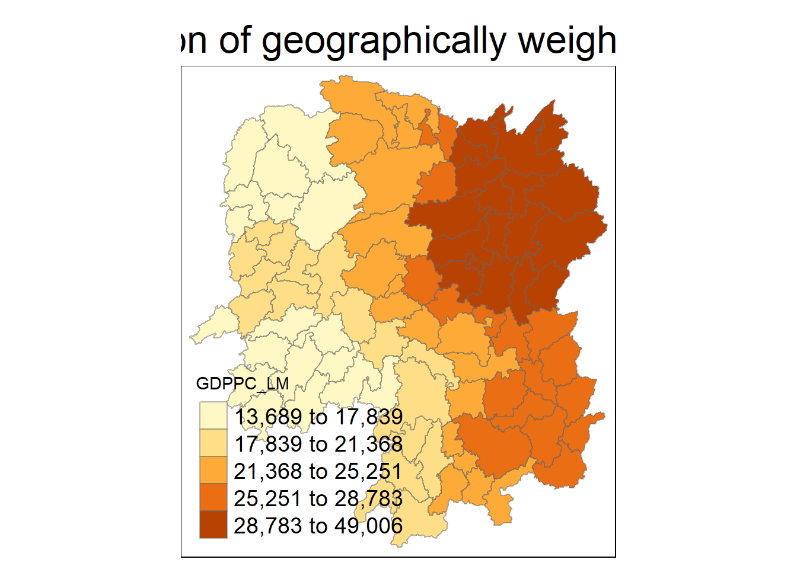

pacman::p_load(sf, spdep, tmap, tidyverse, knitr, GWmodel, ggstatsplot)
set.seed(123)In Class Exercise 4
Introduction
In this exercise, we focus on reinforcing our learning from Hands-on Exercise 4.
Additionally, we also implement the GWModel package in this exercise.
The GWModel package in R is designed for performing geographically weighted (GW) models, which account for spatial heterogeneity by allowing local rather than global parameter estimates. This is particularly useful when the relationship between your dependent and independent variables might vary across space, such as in spatial regression analysis.
Data and Packages
For this exercise, we will be focusing on Hunan. The following data sets will be used:
Hunan county boundary layer. This is a geospatial data set in ESRI shapefile format.
Hunan_2012.csv: This csv file contains selected Hunan’s local development indicators in 2012.
The following packages are used:
sf: Provides simple features support for handling and analyzing spatial vector data in R.spdep: A package for spatial dependence and spatial regression analysis, particularly for handling spatial weights.tmap: A flexible visualization package for thematic maps, supporting both static and interactive mapping in R.tidyverse: A collection of R packages designed for data science, emphasizing data manipulation, visualization, and functional programming.knitr: A dynamic report generation tool in R, allowing for the integration of code, results, and narrative in reproducible documents.GWmodelhas been discussed above, above this section.ggstatsplotis a power visualization package. It enhancesggplot2by including the results of hypothesis tests, effect sizes and confidence intervals on the plots.We import these packages into our environment.
4.2 Importing the data
We start of by importing the Hunan shapefile into R using the st_read() function of the sf package.
hunan <- st_read(dsn = "data/geospatial",
layer = "Hunan")Reading layer `Hunan' from data source
`C:\arjxn11\ISSS626-GAA\In-class_Ex\In-class_Ex4\data\geospatial'
using driver `ESRI Shapefile'
Simple feature collection with 88 features and 7 fields
Geometry type: POLYGON
Dimension: XY
Bounding box: xmin: 108.7831 ymin: 24.6342 xmax: 114.2544 ymax: 30.12812
Geodetic CRS: WGS 84We see that it is a simple feature data-frame with 88 features and 7 fields, projected in the WGS84 coordinate system.
We now import the csv file using the read_csv() function of the readr package.
hunan2012 <- read_csv("data/aspatial/Hunan_2012.csv")This is a simple R data-frame.
4.2.1 Performing relational joins
We will proceed to join this to the simple feature data-frame, hunan, obtained above using a relational join technique.
The left_join() function of the dplyr package is used as shown in the code chunk below.
hunan <- left_join(hunan,hunan2012)%>%
dplyr::select(1:3, 7, 15, 16, 31, 32) # This facilitates efficiency... dropping unnecessary columns is important.4.9 In-class Exercise: GWmodel Package
We specifically focus on the gwss function of the GWmodel package.
The gwss() function in the GWModels R package stands for Geographically Weighted Summary Statistics. It allows you to calculate local summary statistics for a set of variables, such as mean, standard deviation, skewness, and more, at different spatial locations. This is useful for understanding spatial variability in your data.
In order to use a GWmodel, we must use the as_Spatial() function of the sf package in order to convert our simple feature data-frame into a spatial object.
hunan_sp=hunan%>%
as_Spatial()4.9.1 Geographically Weighted Summary Statistics with adaptive bandwidth
4.9.1.1 Determine Adaptive Bandwidth
bw_CV=bw.gwr(GDPPC ~ 1, #arbitrary number
data= hunan_sp,
approach = 'CV',
adaptive = TRUE,
kernel = 'bisquare',
longlat = T)Adaptive bandwidth: 62 CV score: 15515442343
Adaptive bandwidth: 46 CV score: 14937956887
Adaptive bandwidth: 36 CV score: 14408561608
Adaptive bandwidth: 29 CV score: 14198527496
Adaptive bandwidth: 26 CV score: 13898800611
Adaptive bandwidth: 22 CV score: 13662299974
Adaptive bandwidth: 22 CV score: 13662299974 bw_CV[1] 22Note: We can also use the AIC method.
bw_AIC=bw.gwr(GDPPC ~ 1, #arbitrary number
data= hunan_sp,
approach = 'AIC',
adaptive = TRUE,
kernel = 'bisquare',
longlat = T) #Converts everything into Kilometers.Adaptive bandwidth (number of nearest neighbours): 62 AICc value: 1923.156
Adaptive bandwidth (number of nearest neighbours): 46 AICc value: 1920.469
Adaptive bandwidth (number of nearest neighbours): 36 AICc value: 1917.324
Adaptive bandwidth (number of nearest neighbours): 29 AICc value: 1916.661
Adaptive bandwidth (number of nearest neighbours): 26 AICc value: 1914.897
Adaptive bandwidth (number of nearest neighbours): 22 AICc value: 1914.045
Adaptive bandwidth (number of nearest neighbours): 22 AICc value: 1914.045 bw_AIC[1] 224.9.1.2 Determining Fixed Bandwidth
In this case, the code generally remains the same except one key difference. We set the adaptive argument to FALSE.
bw_fixed_CV=bw.gwr(GDPPC ~ 1, #arbitrary number
data= hunan_sp,
approach = 'CV',
adaptive = FALSE,
kernel = 'bisquare',
longlat = T)Fixed bandwidth: 357.4897 CV score: 16265191728
Fixed bandwidth: 220.985 CV score: 14954930931
Fixed bandwidth: 136.6204 CV score: 14134185837
Fixed bandwidth: 84.48025 CV score: 13693362460
Fixed bandwidth: 52.25585 CV score: Inf
Fixed bandwidth: 104.396 CV score: 13891052305
Fixed bandwidth: 72.17162 CV score: 13577893677
Fixed bandwidth: 64.56447 CV score: 14681160609
Fixed bandwidth: 76.8731 CV score: 13444716890
Fixed bandwidth: 79.77877 CV score: 13503296834
Fixed bandwidth: 75.07729 CV score: 13452450771
Fixed bandwidth: 77.98296 CV score: 13457916138
Fixed bandwidth: 76.18716 CV score: 13442911302
Fixed bandwidth: 75.76323 CV score: 13444600639
Fixed bandwidth: 76.44916 CV score: 13442994078
Fixed bandwidth: 76.02523 CV score: 13443285248
Fixed bandwidth: 76.28724 CV score: 13442844774
Fixed bandwidth: 76.34909 CV score: 13442864995
Fixed bandwidth: 76.24901 CV score: 13442855596
Fixed bandwidth: 76.31086 CV score: 13442847019
Fixed bandwidth: 76.27264 CV score: 13442846793
Fixed bandwidth: 76.29626 CV score: 13442844829
Fixed bandwidth: 76.28166 CV score: 13442845238
Fixed bandwidth: 76.29068 CV score: 13442844678
Fixed bandwidth: 76.29281 CV score: 13442844691
Fixed bandwidth: 76.28937 CV score: 13442844698
Fixed bandwidth: 76.2915 CV score: 13442844676
Fixed bandwidth: 76.292 CV score: 13442844679
Fixed bandwidth: 76.29119 CV score: 13442844676
Fixed bandwidth: 76.29099 CV score: 13442844676
Fixed bandwidth: 76.29131 CV score: 13442844676
Fixed bandwidth: 76.29138 CV score: 13442844676
Fixed bandwidth: 76.29126 CV score: 13442844676
Fixed bandwidth: 76.29123 CV score: 13442844676 bw_fixed_AIC=bw.gwr(GDPPC ~ 1, #arbitrary number
data= hunan_sp,
approach = 'AIC',
adaptive = FALSE,
kernel = 'bisquare',
longlat = T)Fixed bandwidth: 357.4897 AICc value: 1927.631
Fixed bandwidth: 220.985 AICc value: 1921.547
Fixed bandwidth: 136.6204 AICc value: 1919.993
Fixed bandwidth: 84.48025 AICc value: 1940.603
Fixed bandwidth: 168.8448 AICc value: 1919.457
Fixed bandwidth: 188.7606 AICc value: 1920.007
Fixed bandwidth: 156.5362 AICc value: 1919.41
Fixed bandwidth: 148.929 AICc value: 1919.527
Fixed bandwidth: 161.2377 AICc value: 1919.392
Fixed bandwidth: 164.1433 AICc value: 1919.403
Fixed bandwidth: 159.4419 AICc value: 1919.393
Fixed bandwidth: 162.3475 AICc value: 1919.394
Fixed bandwidth: 160.5517 AICc value: 1919.391 We notice a very significant difference between fixed and adaptive bandwidth approaches.
4.9.2 Computing Geographically Weighted Summary Statistics
We will now implement the gwss() function to compute the summary statistics.
gwstat=gwss( data = hunan_sp,
vars='GDPPC',
bw=bw_AIC,
kernel = "bisquare",
adaptive=TRUE,
longlat = T)
gwstat ***********************************************************************
* Package GWmodel *
***********************************************************************
***********************Calibration information*************************
Local summary statistics calculated for variables:
GDPPC
Number of summary points: 88
Kernel function: bisquare
Summary points: the same locations as observations are used.
Adaptive bandwidth: 22 (number of nearest neighbours)
Distance metric: Great Circle distance metric is used.
************************Local Summary Statistics:**********************
Summary information for Local means:
GDPPC_LM
Min. 1st Qu. Median 3rd Qu. Max.
13688.70 17995.43 23408.07 27865.12 49005.84
Summary information for local standard deviation :
GDPPC_LSD
Min. 1st Qu. Median 3rd Qu. Max.
4282.599 6297.788 8281.756 16315.028 22568.841
Summary information for local variance :
GDPPC_LVar
Min. 1st Qu. Median 3rd Qu. Max.
18340656 39662960 68633859 266187788 509352591
Summary information for Local skewness:
GDPPC_LSKe
Min. 1st Qu. Median 3rd Qu. Max.
-0.2150599 0.9900027 1.3714638 1.8387524 3.7525953
Summary information for localized coefficient of variation:
GDPPC_LCV
Min. 1st Qu. Median 3rd Qu. Max.
0.2000503 0.3107774 0.3829294 0.5129959 0.8018153
************************************************************************Note: the Kernel and Adaptive must be consistent for computation of bandwidth as well as the Summary Statistics.
4.9.3 Preparing the output data
We implement the code chunk below to extract the SDF data table from the gwss object output fro gwss(). It is converted into a data-frame by applying the as.data.frame() function.
gwstat_df=as.data.frame(gwstat$SDF)After this, we can implement cbind() to append the newly derived data-frame onto the hunan sf data frame.
hunan_gstat=cbind(hunan, gwstat_df)4.9.4 Visualization
We will now plot the above obtained data-frame in order to facilitate visualization.
tm_shape(hunan_gstat)+
tm_fill('GDPPC_LM',
n=5,
style='quantile')+
tm_borders(alpha = 0.5)+
tm_layout(main.title = "Distribution of geographically weighted mean",
main.title.position = "center",
main.title.size = 2.0,
legend.text.size = 1.2,
legend.height = 1.5,
legend.width = 1.5,
frame = TRUE)
4.9.5 Geographically weighted correlation with adaptive bandwidth
4.9.5.1 Computing Correlation
bw=bw.gwr(GDPPC ~ GIO, #arbitrary number
data= hunan_sp,
approach = 'AIC',
adaptive = TRUE,
kernel = 'bisquare',
longlat = T)Adaptive bandwidth (number of nearest neighbours): 62 AICc value: 1870.499
Adaptive bandwidth (number of nearest neighbours): 46 AICc value: 1870.902
Adaptive bandwidth (number of nearest neighbours): 72 AICc value: 1869.93
Adaptive bandwidth (number of nearest neighbours): 78 AICc value: 1869.589
Adaptive bandwidth (number of nearest neighbours): 82 AICc value: 1869.428
Adaptive bandwidth (number of nearest neighbours): 84 AICc value: 1869.688
Adaptive bandwidth (number of nearest neighbours): 80 AICc value: 1869.385
Adaptive bandwidth (number of nearest neighbours): 79 AICc value: 1869.47
Adaptive bandwidth (number of nearest neighbours): 80 AICc value: 1869.385 gwstats=gwss(hunan_sp,
vars=c('GDPPC', 'GIO'),
bw=bw,
kernel='bisquare',
adaptive = TRUE,
longlat=T)We will now plot the scatterplot with the best fit line as well as required summary statistics to further our understanding of the data.